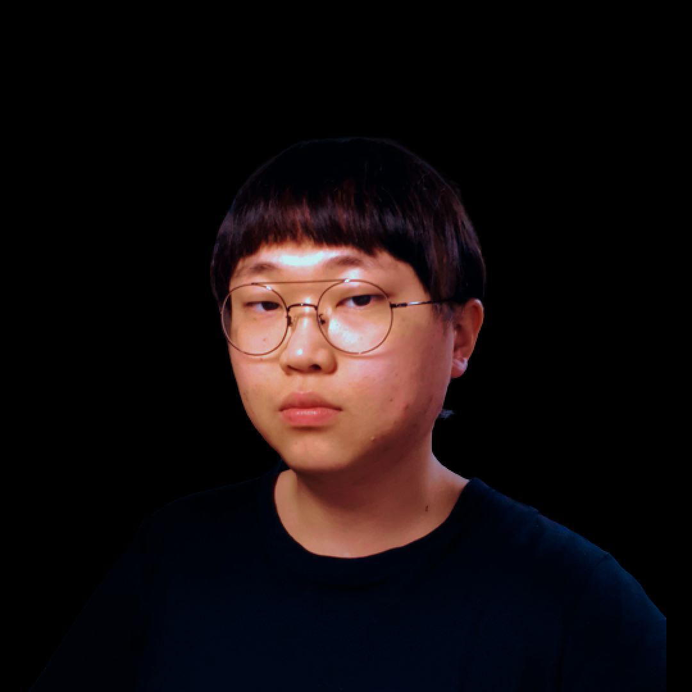

여원모

1992년생, 부산에서 나고 자랐다.
음악 만들기를 좋아해서 전자음악가가 되려 했지만
프로그래밍의 재미를 알게된 후로 과감하게 오랜 꿈을 놓았다.
2013년 동아대 프랑스문화학과 입학, 군 전역 후 2018년 부산대학교
불어불문학과로 편입 후
2021년 부전공으로 정보컴퓨터공학 이수 후 졸업했다.
2020년 8월, 졸업 전 논문만을 남긴 원모는 부산대학교 산학협력관에
입주해 있던 LOCS에 입사했다.
LOCS에서 백엔드 프로그래머 겸, flutter 개발자로 일하다가 2021년
4월에 퇴사했다.
LOCS의 인공지능 팀과 협업했던 TTS 서비스, 스마트 과학관 등을
비롯하여, 투표시스템 '보통', 챗봇 빌더 '아비터'
등 LOCS에서 유지하는 모든 백엔드 프로그램의 유지보수 및
개발을 맡았었고, 스마트 과학관은 풀스택으로 작업했다.
퇴사
당시 인수인계 문서로만 100여 페이지를 남겼다. 9개월 일하고 남긴
양 치고는 너무 많았다.
위에 언급한 내용과 관련한 조금 더 디테일한 내용은 이곳에...
재미있는 것에 목말랐던 원모는 직접 회사를 차리겠다며 개인사업자
'원모네'를 만들었지만, 통장잔고 issue로 인해 현재 구직 중이다.
이번에 좋은 회사를 찾아 들어가면 뒷머리가 발꿈치에 닿을 때까지 일할 생각이다.
특이 사항 :
+ 부산대학교 오케스트라 동아리에서 2018년도 9월부터 2020년 2월까지 트럼펫 주자로 활동했다.
+ Aseprite(도트 디자인 툴)를 다룰 줄 안다.
+ Ableton(Digital Audio Workstation 중 하나)을 다룰 줄 안다.
🎶 원모의 전자음악가 시절 음악
💾 원모 깃허브
👔 원모의 티스토리 블로그